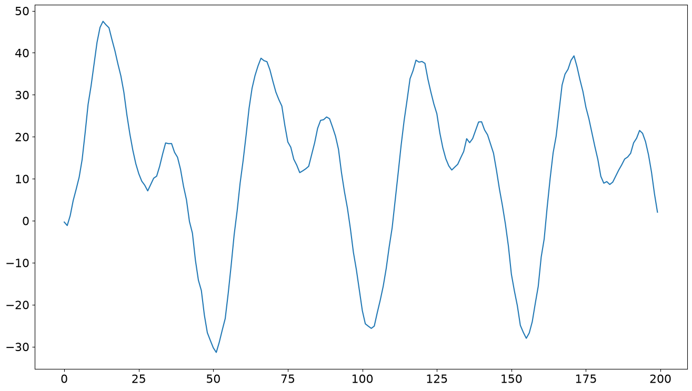
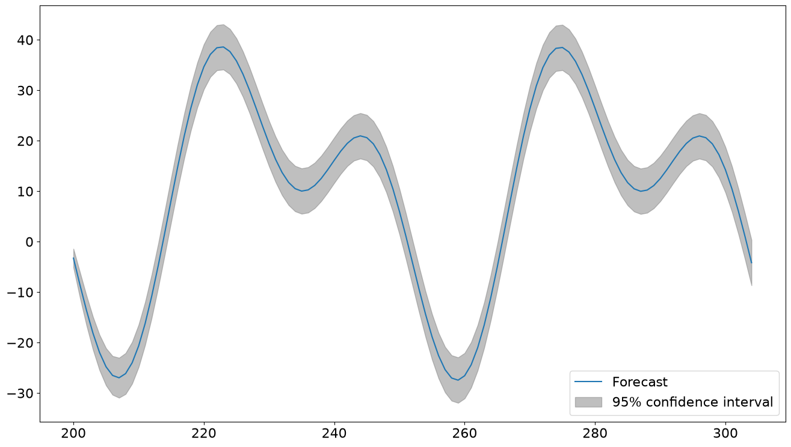

Deterministic Terms in Time Series Models#
[1]:
import matplotlib.pyplot as plt
import numpy as np
import pandas as pd
plt.rc("figure", figsize=(16, 9))
plt.rc("font", size=16)
Basic Use#
Basic configurations can be directly constructed through DeterministicProcess. These can include a constant, a time trend of any order, and either a seasonal or a Fourier component.
The process requires an index, which is the index of the full-sample (or in-sample).
First, we initialize a deterministic process with a constant, a linear time trend, and a 5-period seasonal term. The in_sample method returns the full set of values that match the index.
[2]:
from statsmodels.tsa.deterministic import DeterministicProcess
index = pd.RangeIndex(0, 100)
det_proc = DeterministicProcess(index, constant=True, order=1, seasonal=True, period=5)
det_proc.in_sample()
[2]:
| const | trend | s(2,5) | s(3,5) | s(4,5) | s(5,5) | |
|---|---|---|---|---|---|---|
| 0 | 1.0 | 1.0 | 0.0 | 0.0 | 0.0 | 0.0 |
| 1 | 1.0 | 2.0 | 1.0 | 0.0 | 0.0 | 0.0 |
| 2 | 1.0 | 3.0 | 0.0 | 1.0 | 0.0 | 0.0 |
| 3 | 1.0 | 4.0 | 0.0 | 0.0 | 1.0 | 0.0 |
| 4 | 1.0 | 5.0 | 0.0 | 0.0 | 0.0 | 1.0 |
| ... | ... | ... | ... | ... | ... | ... |
| 95 | 1.0 | 96.0 | 0.0 | 0.0 | 0.0 | 0.0 |
| 96 | 1.0 | 97.0 | 1.0 | 0.0 | 0.0 | 0.0 |
| 97 | 1.0 | 98.0 | 0.0 | 1.0 | 0.0 | 0.0 |
| 98 | 1.0 | 99.0 | 0.0 | 0.0 | 1.0 | 0.0 |
| 99 | 1.0 | 100.0 | 0.0 | 0.0 | 0.0 | 1.0 |
100 rows × 6 columns
The out_of_sample returns the next steps values after the end of the in-sample.
[3]:
det_proc.out_of_sample(15)
[3]:
| const | trend | s(2,5) | s(3,5) | s(4,5) | s(5,5) | |
|---|---|---|---|---|---|---|
| 100 | 1.0 | 101.0 | 0.0 | 0.0 | 0.0 | 0.0 |
| 101 | 1.0 | 102.0 | 1.0 | 0.0 | 0.0 | 0.0 |
| 102 | 1.0 | 103.0 | 0.0 | 1.0 | 0.0 | 0.0 |
| 103 | 1.0 | 104.0 | 0.0 | 0.0 | 1.0 | 0.0 |
| 104 | 1.0 | 105.0 | 0.0 | 0.0 | 0.0 | 1.0 |
| 105 | 1.0 | 106.0 | 0.0 | 0.0 | 0.0 | 0.0 |
| 106 | 1.0 | 107.0 | 1.0 | 0.0 | 0.0 | 0.0 |
| 107 | 1.0 | 108.0 | 0.0 | 1.0 | 0.0 | 0.0 |
| 108 | 1.0 | 109.0 | 0.0 | 0.0 | 1.0 | 0.0 |
| 109 | 1.0 | 110.0 | 0.0 | 0.0 | 0.0 | 1.0 |
| 110 | 1.0 | 111.0 | 0.0 | 0.0 | 0.0 | 0.0 |
| 111 | 1.0 | 112.0 | 1.0 | 0.0 | 0.0 | 0.0 |
| 112 | 1.0 | 113.0 | 0.0 | 1.0 | 0.0 | 0.0 |
| 113 | 1.0 | 114.0 | 0.0 | 0.0 | 1.0 | 0.0 |
| 114 | 1.0 | 115.0 | 0.0 | 0.0 | 0.0 | 1.0 |
range(start, stop) can also be used to produce the deterministic terms over any range including in- and out-of-sample.
Notes#
When the index is a pandas
DatetimeIndexor aPeriodIndex, thenstartandstopcan be date-like (strings, e.g., “2020-06-01”, or Timestamp) or integers.stopis always included in the range. While this is not very Pythonic, it is needed since both statsmodels and Pandas includestopwhen working with date-like slices.
[4]:
det_proc.range(190, 210)
[4]:
| const | trend | s(2,5) | s(3,5) | s(4,5) | s(5,5) | |
|---|---|---|---|---|---|---|
| 190 | 1.0 | 191.0 | 0.0 | 0.0 | 0.0 | 0.0 |
| 191 | 1.0 | 192.0 | 1.0 | 0.0 | 0.0 | 0.0 |
| 192 | 1.0 | 193.0 | 0.0 | 1.0 | 0.0 | 0.0 |
| 193 | 1.0 | 194.0 | 0.0 | 0.0 | 1.0 | 0.0 |
| 194 | 1.0 | 195.0 | 0.0 | 0.0 | 0.0 | 1.0 |
| 195 | 1.0 | 196.0 | 0.0 | 0.0 | 0.0 | 0.0 |
| 196 | 1.0 | 197.0 | 1.0 | 0.0 | 0.0 | 0.0 |
| 197 | 1.0 | 198.0 | 0.0 | 1.0 | 0.0 | 0.0 |
| 198 | 1.0 | 199.0 | 0.0 | 0.0 | 1.0 | 0.0 |
| 199 | 1.0 | 200.0 | 0.0 | 0.0 | 0.0 | 1.0 |
| 200 | 1.0 | 201.0 | 0.0 | 0.0 | 0.0 | 0.0 |
| 201 | 1.0 | 202.0 | 1.0 | 0.0 | 0.0 | 0.0 |
| 202 | 1.0 | 203.0 | 0.0 | 1.0 | 0.0 | 0.0 |
| 203 | 1.0 | 204.0 | 0.0 | 0.0 | 1.0 | 0.0 |
| 204 | 1.0 | 205.0 | 0.0 | 0.0 | 0.0 | 1.0 |
| 205 | 1.0 | 206.0 | 0.0 | 0.0 | 0.0 | 0.0 |
| 206 | 1.0 | 207.0 | 1.0 | 0.0 | 0.0 | 0.0 |
| 207 | 1.0 | 208.0 | 0.0 | 1.0 | 0.0 | 0.0 |
| 208 | 1.0 | 209.0 | 0.0 | 0.0 | 1.0 | 0.0 |
| 209 | 1.0 | 210.0 | 0.0 | 0.0 | 0.0 | 1.0 |
| 210 | 1.0 | 211.0 | 0.0 | 0.0 | 0.0 | 0.0 |
Using a Date-like Index#
Next, we show the same steps using a PeriodIndex.
[5]:
index = pd.period_range("2020-03-01", freq="M", periods=60)
det_proc = DeterministicProcess(index, constant=True, fourier=2)
det_proc.in_sample().head(12)
[5]:
| const | sin(1,12) | cos(1,12) | sin(2,12) | cos(2,12) | |
|---|---|---|---|---|---|
| 2020-03 | 1.0 | 0.000000e+00 | 1.000000e+00 | 0.000000e+00 | 1.0 |
| 2020-04 | 1.0 | 5.000000e-01 | 8.660254e-01 | 8.660254e-01 | 0.5 |
| 2020-05 | 1.0 | 8.660254e-01 | 5.000000e-01 | 8.660254e-01 | -0.5 |
| 2020-06 | 1.0 | 1.000000e+00 | 6.123234e-17 | 1.224647e-16 | -1.0 |
| 2020-07 | 1.0 | 8.660254e-01 | -5.000000e-01 | -8.660254e-01 | -0.5 |
| 2020-08 | 1.0 | 5.000000e-01 | -8.660254e-01 | -8.660254e-01 | 0.5 |
| 2020-09 | 1.0 | 1.224647e-16 | -1.000000e+00 | -2.449294e-16 | 1.0 |
| 2020-10 | 1.0 | -5.000000e-01 | -8.660254e-01 | 8.660254e-01 | 0.5 |
| 2020-11 | 1.0 | -8.660254e-01 | -5.000000e-01 | 8.660254e-01 | -0.5 |
| 2020-12 | 1.0 | -1.000000e+00 | -1.836970e-16 | 3.673940e-16 | -1.0 |
| 2021-01 | 1.0 | -8.660254e-01 | 5.000000e-01 | -8.660254e-01 | -0.5 |
| 2021-02 | 1.0 | -5.000000e-01 | 8.660254e-01 | -8.660254e-01 | 0.5 |
[6]:
det_proc.out_of_sample(12)
[6]:
| const | sin(1,12) | cos(1,12) | sin(2,12) | cos(2,12) | |
|---|---|---|---|---|---|
| 2025-03 | 1.0 | -1.224647e-15 | 1.000000e+00 | -2.449294e-15 | 1.0 |
| 2025-04 | 1.0 | 5.000000e-01 | 8.660254e-01 | 8.660254e-01 | 0.5 |
| 2025-05 | 1.0 | 8.660254e-01 | 5.000000e-01 | 8.660254e-01 | -0.5 |
| 2025-06 | 1.0 | 1.000000e+00 | -4.904777e-16 | -9.809554e-16 | -1.0 |
| 2025-07 | 1.0 | 8.660254e-01 | -5.000000e-01 | -8.660254e-01 | -0.5 |
| 2025-08 | 1.0 | 5.000000e-01 | -8.660254e-01 | -8.660254e-01 | 0.5 |
| 2025-09 | 1.0 | 4.899825e-15 | -1.000000e+00 | -9.799650e-15 | 1.0 |
| 2025-10 | 1.0 | -5.000000e-01 | -8.660254e-01 | 8.660254e-01 | 0.5 |
| 2025-11 | 1.0 | -8.660254e-01 | -5.000000e-01 | 8.660254e-01 | -0.5 |
| 2025-12 | 1.0 | -1.000000e+00 | -3.184701e-15 | 6.369401e-15 | -1.0 |
| 2026-01 | 1.0 | -8.660254e-01 | 5.000000e-01 | -8.660254e-01 | -0.5 |
| 2026-02 | 1.0 | -5.000000e-01 | 8.660254e-01 | -8.660254e-01 | 0.5 |
range accepts date-like arguments, which are usually given as strings.
[7]:
det_proc.range("2025-01", "2026-01")
[7]:
| const | sin(1,12) | cos(1,12) | sin(2,12) | cos(2,12) | |
|---|---|---|---|---|---|
| 2025-01 | 1.0 | -8.660254e-01 | 5.000000e-01 | -8.660254e-01 | -0.5 |
| 2025-02 | 1.0 | -5.000000e-01 | 8.660254e-01 | -8.660254e-01 | 0.5 |
| 2025-03 | 1.0 | -1.224647e-15 | 1.000000e+00 | -2.449294e-15 | 1.0 |
| 2025-04 | 1.0 | 5.000000e-01 | 8.660254e-01 | 8.660254e-01 | 0.5 |
| 2025-05 | 1.0 | 8.660254e-01 | 5.000000e-01 | 8.660254e-01 | -0.5 |
| 2025-06 | 1.0 | 1.000000e+00 | -4.904777e-16 | -9.809554e-16 | -1.0 |
| 2025-07 | 1.0 | 8.660254e-01 | -5.000000e-01 | -8.660254e-01 | -0.5 |
| 2025-08 | 1.0 | 5.000000e-01 | -8.660254e-01 | -8.660254e-01 | 0.5 |
| 2025-09 | 1.0 | 4.899825e-15 | -1.000000e+00 | -9.799650e-15 | 1.0 |
| 2025-10 | 1.0 | -5.000000e-01 | -8.660254e-01 | 8.660254e-01 | 0.5 |
| 2025-11 | 1.0 | -8.660254e-01 | -5.000000e-01 | 8.660254e-01 | -0.5 |
| 2025-12 | 1.0 | -1.000000e+00 | -3.184701e-15 | 6.369401e-15 | -1.0 |
| 2026-01 | 1.0 | -8.660254e-01 | 5.000000e-01 | -8.660254e-01 | -0.5 |
This is equivalent to using the integer values 58 and 70.
[8]:
det_proc.range(58, 70)
[8]:
| const | sin(1,12) | cos(1,12) | sin(2,12) | cos(2,12) | |
|---|---|---|---|---|---|
| 2025-01 | 1.0 | -8.660254e-01 | 5.000000e-01 | -8.660254e-01 | -0.5 |
| 2025-02 | 1.0 | -5.000000e-01 | 8.660254e-01 | -8.660254e-01 | 0.5 |
| 2025-03 | 1.0 | -1.224647e-15 | 1.000000e+00 | -2.449294e-15 | 1.0 |
| 2025-04 | 1.0 | 5.000000e-01 | 8.660254e-01 | 8.660254e-01 | 0.5 |
| 2025-05 | 1.0 | 8.660254e-01 | 5.000000e-01 | 8.660254e-01 | -0.5 |
| 2025-06 | 1.0 | 1.000000e+00 | -4.904777e-16 | -9.809554e-16 | -1.0 |
| 2025-07 | 1.0 | 8.660254e-01 | -5.000000e-01 | -8.660254e-01 | -0.5 |
| 2025-08 | 1.0 | 5.000000e-01 | -8.660254e-01 | -8.660254e-01 | 0.5 |
| 2025-09 | 1.0 | 4.899825e-15 | -1.000000e+00 | -9.799650e-15 | 1.0 |
| 2025-10 | 1.0 | -5.000000e-01 | -8.660254e-01 | 8.660254e-01 | 0.5 |
| 2025-11 | 1.0 | -8.660254e-01 | -5.000000e-01 | 8.660254e-01 | -0.5 |
| 2025-12 | 1.0 | -1.000000e+00 | -3.184701e-15 | 6.369401e-15 | -1.0 |
| 2026-01 | 1.0 | -8.660254e-01 | 5.000000e-01 | -8.660254e-01 | -0.5 |
Advanced Construction#
Deterministic processes with features not supported directly through the constructor can be created using additional_terms which accepts a list of DetermisticTerm. Here we create a deterministic process with two seasonal components: day-of-week with a 5 day period and an annual captured through a Fourier component with a period of 365.25 days.
[9]:
from statsmodels.tsa.deterministic import Fourier, Seasonality, TimeTrend
index = pd.period_range("2020-03-01", freq="D", periods=2 * 365)
tt = TimeTrend(constant=True)
four = Fourier(period=365.25, order=2)
seas = Seasonality(period=7)
det_proc = DeterministicProcess(index, additional_terms=[tt, seas, four])
det_proc.in_sample().head(28)
[9]:
| const | s(2,7) | s(3,7) | s(4,7) | s(5,7) | s(6,7) | s(7,7) | sin(1,365.25) | cos(1,365.25) | sin(2,365.25) | cos(2,365.25) | |
|---|---|---|---|---|---|---|---|---|---|---|---|
| 2020-03-01 | 1.0 | 0.0 | 0.0 | 0.0 | 0.0 | 0.0 | 0.0 | 0.000000 | 1.000000 | 0.000000 | 1.000000 |
| 2020-03-02 | 1.0 | 1.0 | 0.0 | 0.0 | 0.0 | 0.0 | 0.0 | 0.017202 | 0.999852 | 0.034398 | 0.999408 |
| 2020-03-03 | 1.0 | 0.0 | 1.0 | 0.0 | 0.0 | 0.0 | 0.0 | 0.034398 | 0.999408 | 0.068755 | 0.997634 |
| 2020-03-04 | 1.0 | 0.0 | 0.0 | 1.0 | 0.0 | 0.0 | 0.0 | 0.051584 | 0.998669 | 0.103031 | 0.994678 |
| 2020-03-05 | 1.0 | 0.0 | 0.0 | 0.0 | 1.0 | 0.0 | 0.0 | 0.068755 | 0.997634 | 0.137185 | 0.990545 |
| 2020-03-06 | 1.0 | 0.0 | 0.0 | 0.0 | 0.0 | 1.0 | 0.0 | 0.085906 | 0.996303 | 0.171177 | 0.985240 |
| 2020-03-07 | 1.0 | 0.0 | 0.0 | 0.0 | 0.0 | 0.0 | 1.0 | 0.103031 | 0.994678 | 0.204966 | 0.978769 |
| 2020-03-08 | 1.0 | 0.0 | 0.0 | 0.0 | 0.0 | 0.0 | 0.0 | 0.120126 | 0.992759 | 0.238513 | 0.971139 |
| 2020-03-09 | 1.0 | 1.0 | 0.0 | 0.0 | 0.0 | 0.0 | 0.0 | 0.137185 | 0.990545 | 0.271777 | 0.962360 |
| 2020-03-10 | 1.0 | 0.0 | 1.0 | 0.0 | 0.0 | 0.0 | 0.0 | 0.154204 | 0.988039 | 0.304719 | 0.952442 |
| 2020-03-11 | 1.0 | 0.0 | 0.0 | 1.0 | 0.0 | 0.0 | 0.0 | 0.171177 | 0.985240 | 0.337301 | 0.941397 |
| 2020-03-12 | 1.0 | 0.0 | 0.0 | 0.0 | 1.0 | 0.0 | 0.0 | 0.188099 | 0.982150 | 0.369484 | 0.929237 |
| 2020-03-13 | 1.0 | 0.0 | 0.0 | 0.0 | 0.0 | 1.0 | 0.0 | 0.204966 | 0.978769 | 0.401229 | 0.915978 |
| 2020-03-14 | 1.0 | 0.0 | 0.0 | 0.0 | 0.0 | 0.0 | 1.0 | 0.221772 | 0.975099 | 0.432499 | 0.901634 |
| 2020-03-15 | 1.0 | 0.0 | 0.0 | 0.0 | 0.0 | 0.0 | 0.0 | 0.238513 | 0.971139 | 0.463258 | 0.886224 |
| 2020-03-16 | 1.0 | 1.0 | 0.0 | 0.0 | 0.0 | 0.0 | 0.0 | 0.255182 | 0.966893 | 0.493468 | 0.869764 |
| 2020-03-17 | 1.0 | 0.0 | 1.0 | 0.0 | 0.0 | 0.0 | 0.0 | 0.271777 | 0.962360 | 0.523094 | 0.852275 |
| 2020-03-18 | 1.0 | 0.0 | 0.0 | 1.0 | 0.0 | 0.0 | 0.0 | 0.288291 | 0.957543 | 0.552101 | 0.833777 |
| 2020-03-19 | 1.0 | 0.0 | 0.0 | 0.0 | 1.0 | 0.0 | 0.0 | 0.304719 | 0.952442 | 0.580455 | 0.814292 |
| 2020-03-20 | 1.0 | 0.0 | 0.0 | 0.0 | 0.0 | 1.0 | 0.0 | 0.321058 | 0.947060 | 0.608121 | 0.793844 |
| 2020-03-21 | 1.0 | 0.0 | 0.0 | 0.0 | 0.0 | 0.0 | 1.0 | 0.337301 | 0.941397 | 0.635068 | 0.772456 |
| 2020-03-22 | 1.0 | 0.0 | 0.0 | 0.0 | 0.0 | 0.0 | 0.0 | 0.353445 | 0.935455 | 0.661263 | 0.750154 |
| 2020-03-23 | 1.0 | 1.0 | 0.0 | 0.0 | 0.0 | 0.0 | 0.0 | 0.369484 | 0.929237 | 0.686676 | 0.726964 |
| 2020-03-24 | 1.0 | 0.0 | 1.0 | 0.0 | 0.0 | 0.0 | 0.0 | 0.385413 | 0.922744 | 0.711276 | 0.702913 |
| 2020-03-25 | 1.0 | 0.0 | 0.0 | 1.0 | 0.0 | 0.0 | 0.0 | 0.401229 | 0.915978 | 0.735034 | 0.678031 |
| 2020-03-26 | 1.0 | 0.0 | 0.0 | 0.0 | 1.0 | 0.0 | 0.0 | 0.416926 | 0.908940 | 0.757922 | 0.652346 |
| 2020-03-27 | 1.0 | 0.0 | 0.0 | 0.0 | 0.0 | 1.0 | 0.0 | 0.432499 | 0.901634 | 0.779913 | 0.625889 |
| 2020-03-28 | 1.0 | 0.0 | 0.0 | 0.0 | 0.0 | 0.0 | 1.0 | 0.447945 | 0.894061 | 0.800980 | 0.598691 |
Custom Deterministic Terms#
The DetermisticTerm Abstract Base Class is designed to be subclassed to help users write custom deterministic terms. We next show two examples. The first is a broken time trend that allows a break after a fixed number of periods. The second is a “trick” deterministic term that allows exogenous data, which is not really a deterministic process, to be treated as if was deterministic. This lets use simplify gathering the terms needed for forecasting.
These are intended to demonstrate the construction of custom terms. They can definitely be improved in terms of input validation.
[10]:
from statsmodels.tsa.deterministic import DeterministicTerm
class BrokenTimeTrend(DeterministicTerm):
def __init__(self, break_period: int):
self._break_period = break_period
def __str__(self):
return "Broken Time Trend"
def _eq_attr(self):
return (self._break_period,)
def in_sample(self, index: pd.Index):
nobs = index.shape[0]
terms = np.zeros((nobs, 2))
terms[self._break_period :, 0] = 1
terms[self._break_period :, 1] = np.arange(self._break_period + 1, nobs + 1)
return pd.DataFrame(terms, columns=["const_break", "trend_break"], index=index)
def out_of_sample(
self, steps: int, index: pd.Index, forecast_index: pd.Index = None
):
# Always call extend index first
fcast_index = self._extend_index(index, steps, forecast_index)
nobs = index.shape[0]
terms = np.zeros((steps, 2))
# Assume break period is in-sample
terms[:, 0] = 1
terms[:, 1] = np.arange(nobs + 1, nobs + steps + 1)
return pd.DataFrame(
terms, columns=["const_break", "trend_break"], index=fcast_index
)
[11]:
btt = BrokenTimeTrend(60)
tt = TimeTrend(constant=True, order=1)
index = pd.RangeIndex(100)
det_proc = DeterministicProcess(index, additional_terms=[tt, btt])
det_proc.range(55, 65)
[11]:
| const | trend | const_break | trend_break | |
|---|---|---|---|---|
| 55 | 1.0 | 56.0 | 0.0 | 0.0 |
| 56 | 1.0 | 57.0 | 0.0 | 0.0 |
| 57 | 1.0 | 58.0 | 0.0 | 0.0 |
| 58 | 1.0 | 59.0 | 0.0 | 0.0 |
| 59 | 1.0 | 60.0 | 0.0 | 0.0 |
| 60 | 1.0 | 61.0 | 1.0 | 61.0 |
| 61 | 1.0 | 62.0 | 1.0 | 62.0 |
| 62 | 1.0 | 63.0 | 1.0 | 63.0 |
| 63 | 1.0 | 64.0 | 1.0 | 64.0 |
| 64 | 1.0 | 65.0 | 1.0 | 65.0 |
| 65 | 1.0 | 66.0 | 1.0 | 66.0 |
Next, we write a simple “wrapper” for some actual exogenous data that simplifies constructing out-of-sample exogenous arrays for forecasting.
[12]:
class ExogenousProcess(DeterministicTerm):
def __init__(self, data):
self._data = data
def __str__(self):
return "Custom Exog Process"
def _eq_attr(self):
return (id(self._data),)
def in_sample(self, index: pd.Index):
return self._data.loc[index]
def out_of_sample(
self, steps: int, index: pd.Index, forecast_index: pd.Index = None
):
forecast_index = self._extend_index(index, steps, forecast_index)
return self._data.loc[forecast_index]
[13]:
import numpy as np
gen = np.random.default_rng(98765432101234567890)
exog = pd.DataFrame(gen.integers(100, size=(300, 2)), columns=["exog1", "exog2"])
exog.head()
[13]:
| exog1 | exog2 | |
|---|---|---|
| 0 | 6 | 99 |
| 1 | 64 | 28 |
| 2 | 15 | 81 |
| 3 | 54 | 8 |
| 4 | 12 | 8 |
[14]:
ep = ExogenousProcess(exog)
tt = TimeTrend(constant=True, order=1)
# The in-sample index
idx = exog.index[:200]
det_proc = DeterministicProcess(idx, additional_terms=[tt, ep])
[15]:
det_proc.in_sample().head()
[15]:
| const | trend | exog1 | exog2 | |
|---|---|---|---|---|
| 0 | 1.0 | 1.0 | 6 | 99 |
| 1 | 1.0 | 2.0 | 64 | 28 |
| 2 | 1.0 | 3.0 | 15 | 81 |
| 3 | 1.0 | 4.0 | 54 | 8 |
| 4 | 1.0 | 5.0 | 12 | 8 |
[16]:
det_proc.out_of_sample(10)
[16]:
| const | trend | exog1 | exog2 | |
|---|---|---|---|---|
| 200 | 1.0 | 201.0 | 56 | 88 |
| 201 | 1.0 | 202.0 | 48 | 84 |
| 202 | 1.0 | 203.0 | 44 | 5 |
| 203 | 1.0 | 204.0 | 65 | 63 |
| 204 | 1.0 | 205.0 | 63 | 39 |
| 205 | 1.0 | 206.0 | 89 | 39 |
| 206 | 1.0 | 207.0 | 41 | 54 |
| 207 | 1.0 | 208.0 | 71 | 5 |
| 208 | 1.0 | 209.0 | 89 | 6 |
| 209 | 1.0 | 210.0 | 58 | 63 |
Model Support#
The only model that directly supports DeterministicProcess is AutoReg. A custom term can be set using the deterministic keyword argument.
Note: Using a custom term requires that trend="n" and seasonal=False so that all deterministic components must come from the custom deterministic term.
Simulate Some Data#
Here we simulate some data that has an weekly seasonality captured by a Fourier series.
[17]:
gen = np.random.default_rng(98765432101234567890)
idx = pd.RangeIndex(200)
det_proc = DeterministicProcess(idx, constant=True, period=52, fourier=2)
det_terms = det_proc.in_sample().to_numpy()
params = np.array([1.0, 3, -1, 4, -2])
exog = det_terms @ params
y = np.empty(200)
y[0] = det_terms[0] @ params + gen.standard_normal()
for i in range(1, 200):
y[i] = 0.9 * y[i - 1] + det_terms[i] @ params + gen.standard_normal()
y = pd.Series(y, index=idx)
ax = y.plot()

The model is then fit using the deterministic keyword argument. seasonal defaults to False but trend defaults to "c" so this needs to be changed.
[18]:
from statsmodels.tsa.api import AutoReg
mod = AutoReg(y, 1, trend="n", deterministic=det_proc)
res = mod.fit()
print(res.summary())
AutoReg Model Results
==============================================================================
Dep. Variable: y No. Observations: 200
Model: AutoReg(1) Log Likelihood -270.964
Method: Conditional MLE S.D. of innovations 0.944
Date: Wed, 24 Jun 2026 AIC 555.927
Time: 14:38:28 BIC 578.980
Sample: 1 HQIC 565.258
200
==============================================================================
coef std err z P>|z| [0.025 0.975]
------------------------------------------------------------------------------
const 0.8436 0.172 4.916 0.000 0.507 1.180
sin(1,52) 2.9738 0.160 18.587 0.000 2.660 3.287
cos(1,52) -0.6771 0.284 -2.380 0.017 -1.235 -0.120
sin(2,52) 3.9951 0.099 40.336 0.000 3.801 4.189
cos(2,52) -1.7206 0.264 -6.519 0.000 -2.238 -1.203
y.L1 0.9116 0.014 63.264 0.000 0.883 0.940
Roots
=============================================================================
Real Imaginary Modulus Frequency
-----------------------------------------------------------------------------
AR.1 1.0970 +0.0000j 1.0970 0.0000
-----------------------------------------------------------------------------
We can use the plot_predict to show the predicted values and their prediction interval. The out-of-sample deterministic values are automatically produced by the deterministic process passed to AutoReg.
[19]:
fig = res.plot_predict(200, 200 + 2 * 52, True)

[20]:
auto_reg_forecast = res.predict(200, 211)
auto_reg_forecast
[20]:
200 -3.253482
201 -8.555660
202 -13.607557
203 -18.152622
204 -21.950370
205 -24.790116
206 -26.503171
207 -26.972781
208 -26.141244
209 -24.013773
210 -20.658891
211 -16.205310
dtype: float64
Using with other models#
Other models do not support DeterministicProcess directly. We can instead manually pass any deterministic terms as exog to model that support exogenous values.
Note that SARIMAX with exogenous variables is OLS with SARIMA errors so that the model is
The parameters on deterministic terms are not directly comparable to AutoReg which evolves according to the equation
When \(x_t\) contains only deterministic terms, these two representation are equivalent (assuming \(\theta(L)=0\) so that there is no MA).
[21]:
from statsmodels.tsa.api import SARIMAX
det_proc = DeterministicProcess(idx, period=52, fourier=2)
det_terms = det_proc.in_sample()
mod = SARIMAX(y, order=(1, 0, 0), trend="c", exog=det_terms)
res = mod.fit(disp=False)
print(res.summary())
SARIMAX Results
==============================================================================
Dep. Variable: y No. Observations: 200
Model: SARIMAX(1, 0, 0) Log Likelihood -293.381
Date: Wed, 24 Jun 2026 AIC 600.763
Time: 14:38:30 BIC 623.851
Sample: 0 HQIC 610.106
- 200
Covariance Type: opg
==============================================================================
coef std err z P>|z| [0.025 0.975]
------------------------------------------------------------------------------
intercept 0.0796 0.140 0.567 0.571 -0.196 0.355
sin(1,52) 9.1917 0.876 10.492 0.000 7.475 10.909
cos(1,52) -17.4351 0.891 -19.576 0.000 -19.181 -15.689
sin(2,52) 1.2510 0.466 2.683 0.007 0.337 2.165
cos(2,52) -17.1865 0.434 -39.582 0.000 -18.038 -16.335
ar.L1 0.9957 0.007 150.751 0.000 0.983 1.009
sigma2 1.0748 0.119 9.067 0.000 0.842 1.307
===================================================================================
Ljung-Box (L1) (Q): 2.16 Jarque-Bera (JB): 1.03
Prob(Q): 0.14 Prob(JB): 0.60
Heteroskedasticity (H): 0.71 Skew: -0.14
Prob(H) (two-sided): 0.16 Kurtosis: 2.78
===================================================================================
Warnings:
[1] Covariance matrix calculated using the outer product of gradients (complex-step).
The forecasts are similar but differ since the parameters of the SARIMAX are estimated using MLE while AutoReg uses OLS.
[22]:
sarimax_forecast = res.forecast(12, exog=det_proc.out_of_sample(12))
df = pd.concat([auto_reg_forecast, sarimax_forecast], axis=1)
df.columns = columns = ["AutoReg", "SARIMAX"]
df
[22]:
| AutoReg | SARIMAX | |
|---|---|---|
| 200 | -3.253482 | -2.956589 |
| 201 | -8.555660 | -7.985654 |
| 202 | -13.607557 | -12.794186 |
| 203 | -18.152622 | -17.131132 |
| 204 | -21.950370 | -20.760702 |
| 205 | -24.790116 | -23.475801 |
| 206 | -26.503171 | -25.109977 |
| 207 | -26.972781 | -25.547190 |
| 208 | -26.141244 | -24.728828 |
| 209 | -24.013773 | -22.657568 |
| 210 | -20.658891 | -19.397841 |
| 211 | -16.205310 | -15.072874 |